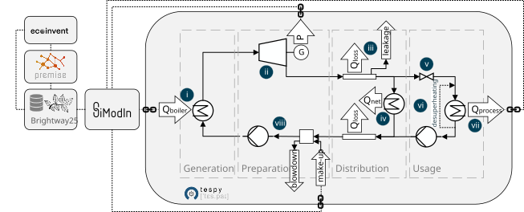

utilityLCA¶
UtilityLCA contains a TESPy network wrapped in a SiModIn model for simulating the impact of distribution of steam as process heat transfer medium in chemical industry.

UtilityLCA can support more accurate LCA of processes by allowing: - Temperature dependent steam impact calculation - Use of different multifunctionality approaches - Adjusting of site specific parameters - Simple integration in LCA workflow by using SiModIn